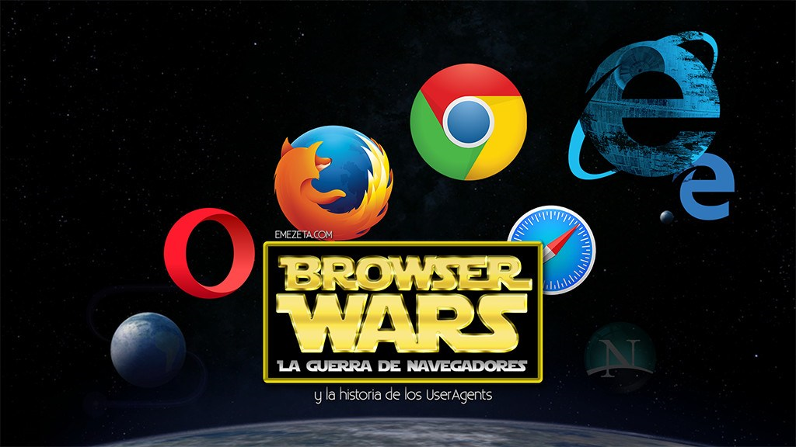

|
Un navegador o navegador web (del inglés, web browser) es un programa que permite ver la información que contiene una página web (ya se encuentre ésta alojada en un servidor dentro de la World Wide Web o en un servidor local).El navegador interpreta el código, HTML generalmente, en el que está escrita la página web y lo presenta en pantalla permitiendo al usuario interactuar con su contenido y navegar hacia otros lugares de la red mediante enlaces o hipervínculos.

Browser Wars (La guerra de los navegadores) es una historia que comienza en 1993, con los primeros navegadores web y que dura hasta nuestros días. Hace mucho tiempo, en un ciberespacio muy, muy lejano, se ideó un sistema para que cualquier navegador web (cliente) que sea utilizado para acceder a una página web tuviera una identificación interna denominada User Agent (Agente de usuario). Este Agente de usuario no era más que una cadena de texto establecida por los creadores del navegador para identificar de que aplicación se trata.

|